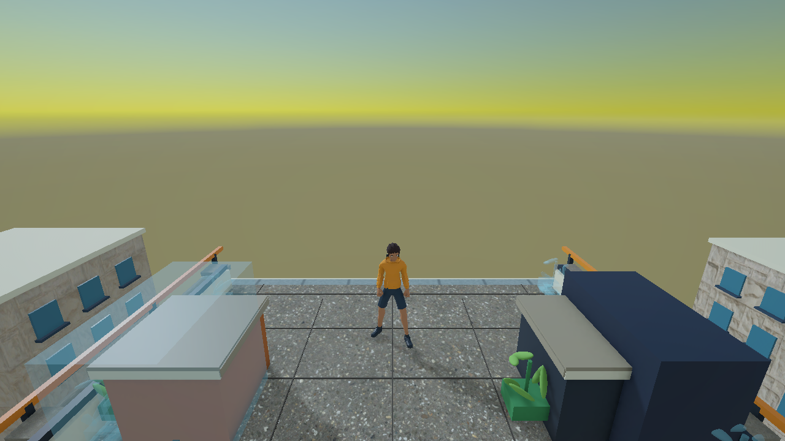
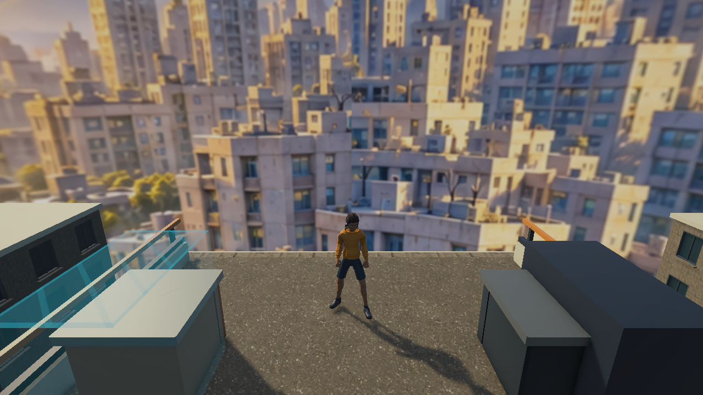
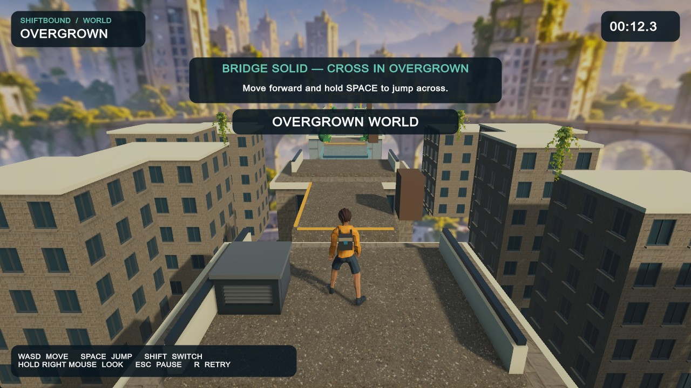
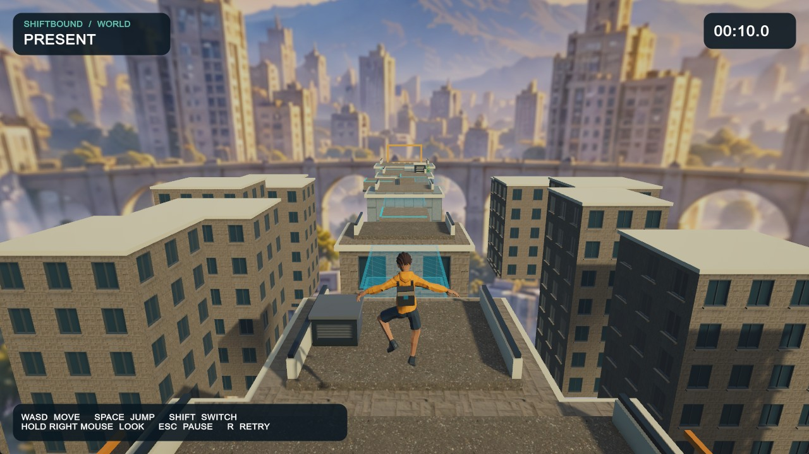
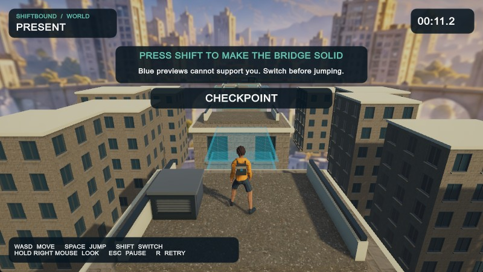
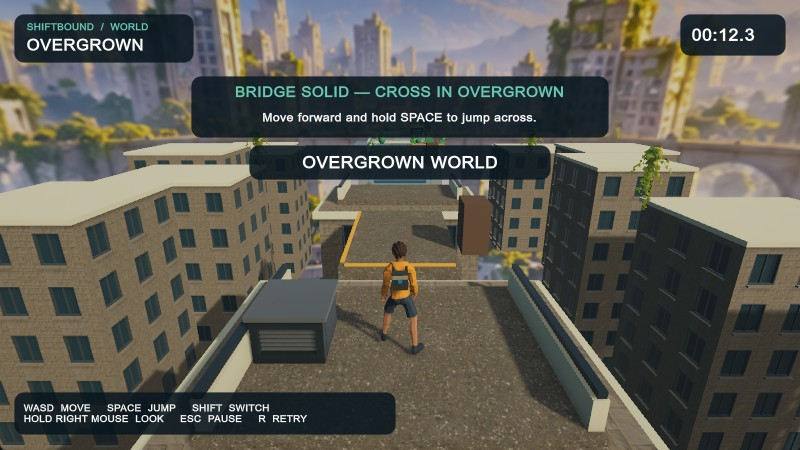
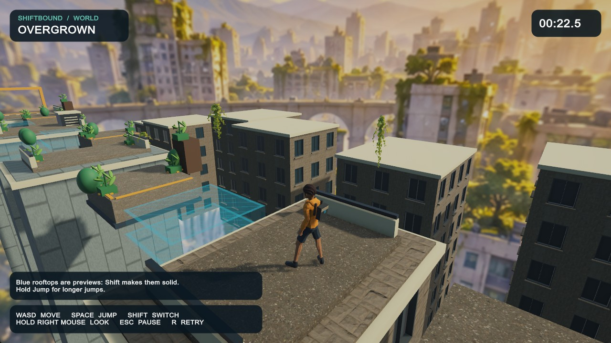

Technical and presentation improvements are demonstrated. The premium art and character-motion gate is not passed. No 9/10 or 10/10 rating is claimed.
These are actual standalone Unity-player renders and screen captures, not generated gameplay illustrations. Fixed-pose renders omit the IMGUI HUD; normal-input screenshots below include it. Present and Overgrown share the same inspection pose within each build. Before/after framing changes from 66°/8 m to 60°/7.6 m are intentional.
Clips are silent MJPEG AVI files, sampled at 20 fps using normal OS keyboard/mouse input. Download/open with a compatible video player. This is automated control of the real game, not human playtesting or an FPS measurement. Video links require the local workspace; PNG/JPEG comparisons are stored with this report.
Overgrown. Corresponding facade meshes are unchanged; growth and solid bridge state differ.
Rear orbit

Before rear view.

After rear view: panorama covers orbit, but angular detail and spherical projection still need production art.
Actual normal input — readable state and movement

1280×720: world notice fits; look/pause/retry controls are discoverable.

Real jump: the existing animation's wide-arm airborne pose remains a quality blocker.
800×450 first lesson

Preview and explicit first-Shift instruction.

Solid bridge and single-line world notice. Text is small; naive-player validation is still required.
Motion and remaining problems

Normal mouse orbit. The courier, generic rooftop surfaces, distant legacy props and planar ivy remain below the approved concept. More decoration will not solve these asset and motion problems.